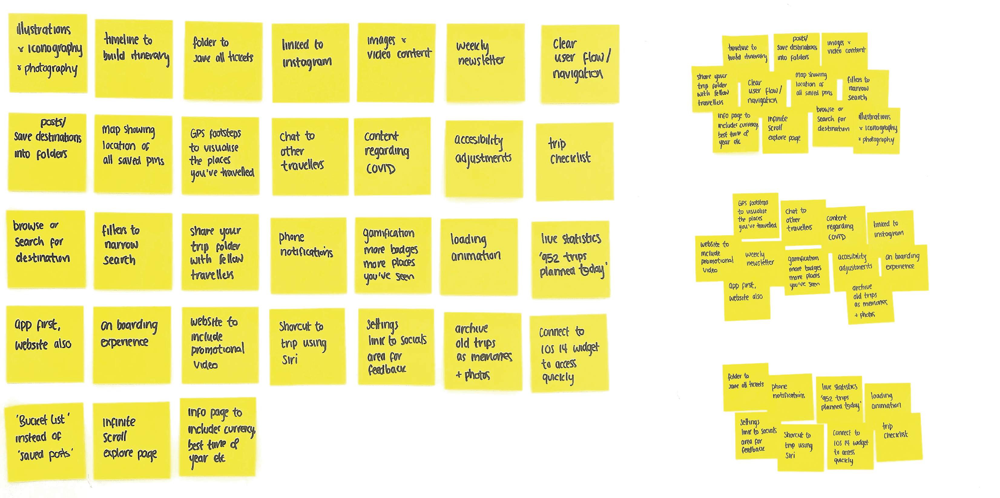
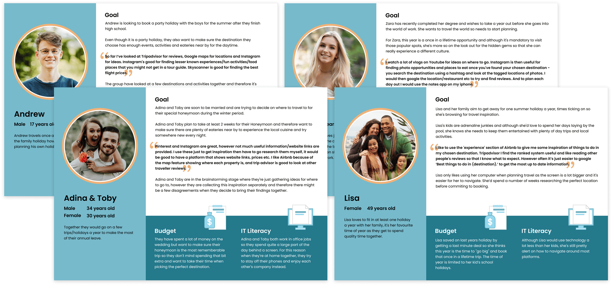
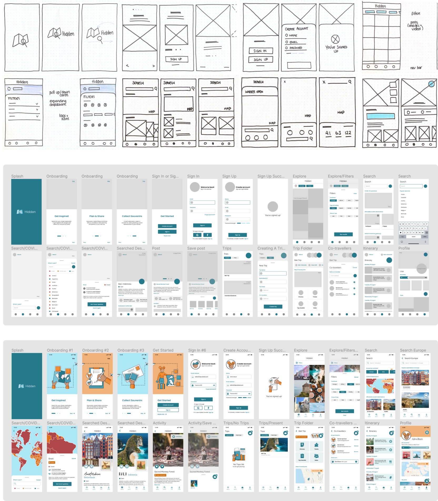

Sept 2020 - May 2021
Hidden Travel App
Replace 10+ travel apps with Hidden, connecting you with locals & past visitors to find the hidden gems of your next adventure 🗺️️
Visit Figma project
Replace 10+ travel apps with Hidden, connecting you with locals & past visitors to find the hidden gems of your next adventure 🗺️️
Visit Figma projectThe concept for Hidden emerged during my preparations for long-haul travel. My approach has always involved thorough research and planning, beginning by gathering travel inspiration about the destination. Next, I delve into researching various activities and dining options, followed by crafting an itinerary so that I can make the most of my trip. However, this process required navigating through 10+ apps, which became quite cumbersome. This led me to envision a travel inspiration and planning app, forming the foundation of my final year major project.
Role: UX Researcher & Designer as part of University final year project
Timeframe: 9 months
Deliverables: Project ideation, brand identity, app prototype, promotional landing page and launch strategy for Hidden.
An important step was to explore the existing landscape and understand the products already catering for a similar purpose, thereby enabling me to define my Unique Selling Point. Utilising the 'S.W.C.D.UX.O' framework, I assessed 20+ platforms, from websites, apps, tv, forums, books, and guides. My evaluation included direct and indirect competitors like LonelyPlanet, TripAdvisor, and GetYourGuide, along with adjacent possible competitors such as Pinterest and Fitbit.
This analysis identified that existing platforms only cover specific aspects of travel planning, requiring the use of multiple apps. These platforms also tend to overwhelm users with excessive content, even though online reading is limited, ultimately resulting in a poor user experience.
The insights from this analysis enabled me to compile a feature list for Hidden, categorised by their level of importance through a card sorting exercise.

The target audience for Hidden is between the ages 16 to 60, with a primary focus on Millennials as they take the most trips per year and spend the most money on travel. More precisely, Hidden caters to pre-planners and organised travellers.
My research commenced with a user survey that received 116 responses, primarily from the 18-24 age group and predominantly female participants. This survey validated my concept, identified competing platforms and highlighted the pain points experienced with participants' existing planning process.
To delve deeper, I conducted 3 interviews with frequent travellers, prompting them to recount their recent travel planning experiences. Using Miro, I concluded each session by having participants prioritise the listed features, revealing divergent perspectives that altered my focus. This user research resulted in the creation of 4 user personas, representing diverse age groups and travel motivations.
Developing these findings, I structured the information architecture, shaping the user journey. This paved the way for crafting 4 user flows, one for each user persona.


With comprehensive market and user insights, I moved into brand development. 'Hidden' emerged as the chosen name, embodying the app's essence of uncovering hidden gems in every adventure.
Inspiration was gathered for typography, colour palette, imagery, illustration, and UI design, resulting in a foundational style tile.
From hand-drawn sketches, I transitioned to digital block frames, translating favoured layouts into digital concepts. Building upon Hidden's tone of voice, I populated these block frames with content, transitioning to low-fidelity wireframes. Evolving further to a high-fidelity prototype of the Hidden app, bringing the product to life.

I conducted moderated in-person and remote user testing sessions with 15 participants. These insights proved instrumental in refining both usability and visual design, as I noticed significant improvements from the initial to the final version of the Hidden app prototype.
In the end, the app concept created in Figma consists of 150+ screens enriched with captivating features, animation and gamification elements.

Fresh brand identities and website redesigns for three divisions within The Clearbox Group 📣
Read project
Northern Ireland’s modern furniture specialists, a luxury furniture store 🛋️
Read project
With a remarkable 170 years of experience, the experts in construction and civil engineering 🏗️
Read project
A multi-award winning, family owned Holiday Home business, nestled at the foot of the Mourne Mountains ⛰️
Read project
Product design in healthcare technology, shaping a clinical lab web app used by scientists worldwide 🩺
Read project